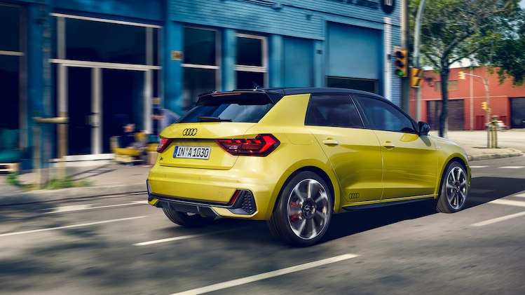

The Audi A1 Sportback is the ideal companion for modern
everyday life. The exterior design will win you over with its striking,
masculine features and its visual proximity to the Audi Ur-quattro and Sport
quattro. The interior is sporty and compact. All controls are strongly
driver-oriented. The infotainment and driver assistance systems at the
luxury class level are also optimally designed for future-oriented
networking.

The wide, low-placed Singleframe grille and the implied side air inlets dominate
the distinctive front. Below the edge of the hood are three flat slits –
an homage to the Sport quattro, the brand’s rally icon.
The distinctive daytime running light graphics of the optional full-LED lights
echo the dynamic wing shapes from sailing, known as hydrofoils. A low-set,
concentrated look in conjunction with the small rhombus segments in the top
section of the headlights provides a sporty appearance.
Fuel consumption combined *: 6.0-4.8 l/100km
CO₂-emissions combined *: 132-108 g/km
The new A1 Sportback is available in a choice of ten colors that impressively
showcase the design language. The roof of the compact model can be optionally
finished in a contrasting color from the A-pillar to the roof edge spoiler.
The exterior mirror housings, the side front spoiler lips and the side sills
are also available in a contrasting color.
Fuel consumption combined *: 6.0-4.8 l/100km
CO₂-emissions combined *: 132-108 g/km
 The new A1 Sportback is much more spacious – making life much more comfortable for
driver, front passenger and rear passengers. The A1 Sportback has grown significantly
in length – with an additional 56 millimeters (2.2 in), it now measures 4.03
meters (13.2 ft). At the same time, the width has remained almost the same at
1.74 (5.7 ft) meters. The new-generation model is only 1.41 meters (4.6 ft)
in height – including aerial, the car is 1.43 meters (4.7 ft) tall.
Luggage capacity has increased by 65 liters (2.3 cu ft).
Normal capacity is 335 liters (11.8 cu ft); with the rear seats folded down,
this increases to 1,090 liters (38.5 cu ft). Loading sill height is a comfortably
low 67 centimeters (2.2 ft).
The new A1 Sportback is much more spacious – making life much more comfortable for
driver, front passenger and rear passengers. The A1 Sportback has grown significantly
in length – with an additional 56 millimeters (2.2 in), it now measures 4.03
meters (13.2 ft). At the same time, the width has remained almost the same at
1.74 (5.7 ft) meters. The new-generation model is only 1.41 meters (4.6 ft)
in height – including aerial, the car is 1.43 meters (4.7 ft) tall.
Luggage capacity has increased by 65 liters (2.3 cu ft).
Normal capacity is 335 liters (11.8 cu ft); with the rear seats folded down,
this increases to 1,090 liters (38.5 cu ft). Loading sill height is a comfortably
low 67 centimeters (2.2 ft).
Fuel consumption combined *: 6.0-4.8 l/100km
CO₂-emissions combined *: 132-108 g/km
 The new Audi A1 Sportback is fit for the digital future.
Even the basic version comes standard with a fully digital instrument cluster
with a high-resolution, 10.25-inch display and a multifunction steering wheel.
The optional Audi virtual cockpit with an extended range of functions presents
comprehensive and diverse information such as animated navigation maps and
graphics of some driver assistance systems in the driver’s direct field of vision.
The Audi smartphone interface ensures you are always well connected on board
the new A1 Sportback. It integrates iOS and Android smartphones using Apple
CarPlay and Android Auto. Music and acoustics aficionados will be pleased to
find a Digital Audio Broadcasting tuner, the Audi sound system and the Bang &
Olufsen Premium Sound System.
The new Audi A1 Sportback is fit for the digital future.
Even the basic version comes standard with a fully digital instrument cluster
with a high-resolution, 10.25-inch display and a multifunction steering wheel.
The optional Audi virtual cockpit with an extended range of functions presents
comprehensive and diverse information such as animated navigation maps and
graphics of some driver assistance systems in the driver’s direct field of vision.
The Audi smartphone interface ensures you are always well connected on board
the new A1 Sportback. It integrates iOS and Android smartphones using Apple
CarPlay and Android Auto. Music and acoustics aficionados will be pleased to
find a Digital Audio Broadcasting tuner, the Audi sound system and the Bang &
Olufsen Premium Sound System.
Fuel consumption combined *: 6.0-4.8 l/100km
CO₂-emissions combined *: 132-108 g/km